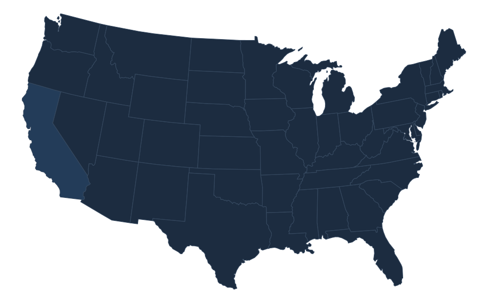

FOLLOW THE GAME. EXPLORE THE CITY.
美國客場巡迴。
從一座球場，走進一座城市。
你的 NBA 旅程，從舊金山灣區出發。
01/ 30
球隊站點，陸續點亮THE JOURNEY STARTS HERE
01 — EXPLORE
美國本土 48 州下一站，灣區主場
已完成 0／1 個政策挑戰

點選籃球，探索球隊站點
- 無賽事
- 待開打
- 進行中
- 已完賽
模擬賽事DEMO CONTROL
切換情境，即時預覽球場狀態
本頁為互動原型，所有賽事與比分皆為本地模擬資料，非即時 NBA 賽況。開打時間以台灣時間（UTC+8）顯示。
WARRIORS STATION / POLICY CHALLENGE 01
熱門對戰，門票該怎麼分？
你是勇士主場的營運人員。熱門對戰只有 60 張票，卻有 80 人登記；你會如何兼顧學生入場機會與票房收入？
以下人數、價格與規則皆為本關自訂，不代表 NBA 或球隊的實際售票政策。
- 可售門票
- 60 張
- 學生登記
- 20 人 每人預算 30 點
- 一般球迷登記
- 60 人 每人都付得起原價 45 點
- 購票上限
- 1 張／人 一人一票，不重複購買
本關兩項目標學生至少 15 人入場票房至少 2,000 點
02 — RESULT
試算結果
確認決策後即記錄完成；是否達成兩項目標會另外標示。重新試算不會清除已完成進度。
三方案並排比較
抽籤的人數是多次抽籤的平均期望值，單次結果不保證恰好有 15 名學生；總入場人數仍為 60 人。
勇士站・第一個政策挑戰↑ 回到地圖